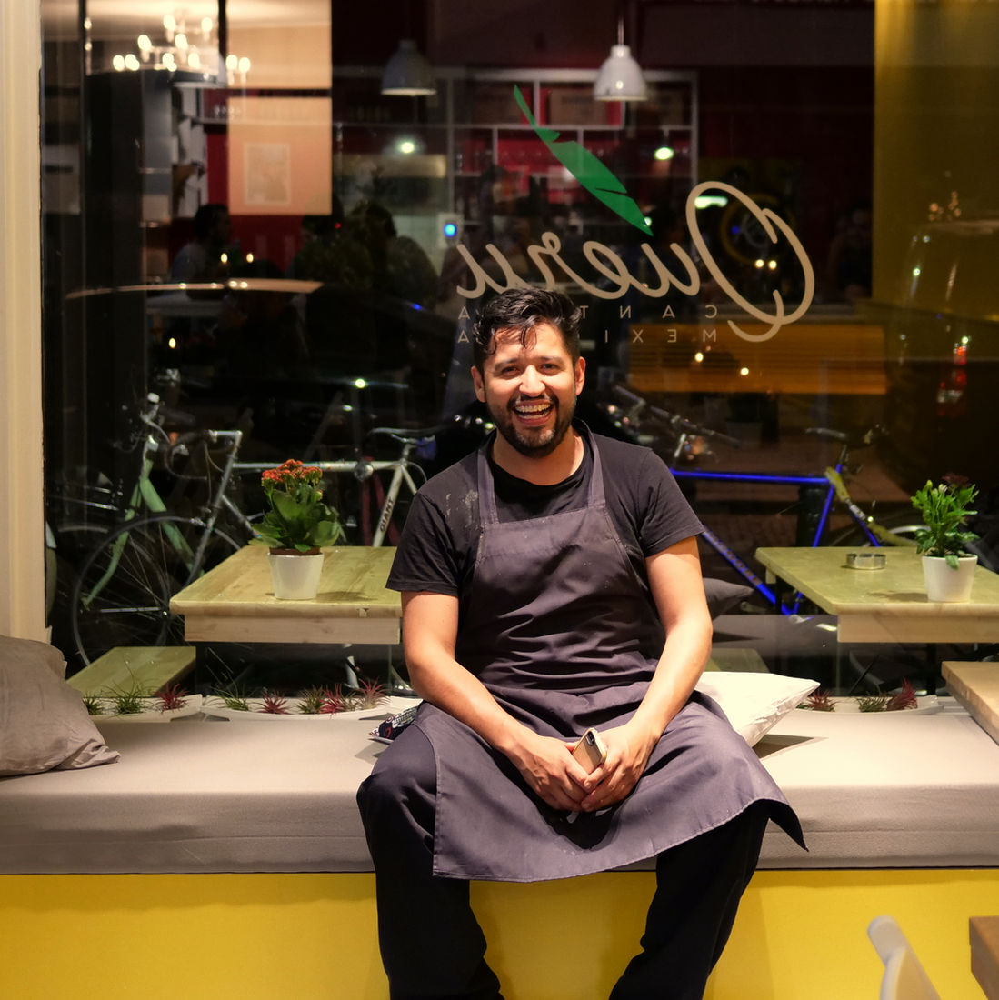

De tweede zaak van Alberto Nol
Alberto maakte naam met zijn eerste restaurant, Ruiseñor aan de Denneweg, waar hij moderne Mexicaanse gerechten maakt die je versteld doen staan. Waar Ruiseñor fine dining is, is Queru ongedwongen comfort food met goede cocktails.
Queru
kort voor querubín, engel
Zo noemden ze Alberto's vader, die in Mexico-Stad ook een tacozaak had. Als mensen zeiden "we gaan naar el Queru", dan gingen ze naar zijn vader voor zijn beroemde taco's.